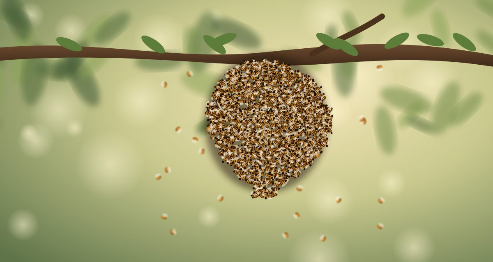

Animal behaviour
How a honeybee swarm picks its next home
Ten thousand bees, one queen and no leader. The way a swarm chooses a new nest is one of nature's best-studied democracies.

Every spring, a healthy honeybee colony does something that looks like a catastrophe. The old queen walks out of the hive with about two thirds of the workers, roughly 10,000 bees, and the whole crowd pours into the air in a roaring cloud. A few minutes later the cloud settles on a nearby branch as a dangling beard of insects. The colony has split in two, and the half on the branch is homeless.
What happens next has fascinated biologists for seventy years. The swarm has no map, no leader and only a few days of honey in its stomachs. Yet in most cases it picks a good cavity, often the best one available, and flies straight to it. The queen plays no part in the choice. The decision belongs to a few hundred of the oldest workers, the scouts.
A few hundred scouts and a lot of searching
Scouts make up only about five percent of the swarm. They fan out across the countryside looking for hollow trees, gaps in walls and empty nest boxes. A scout that finds a promising hole spends a long time inside it, walking the walls and measuring the space. She checks how big the cavity is, how high the entrance sits off the ground, how small the opening is and whether the inside is dry.
Their standards are surprisingly precise. In experiments with nest boxes of different sizes, bees strongly prefer a cavity of about 40 liters, with an entrance of about 12.5 square centimeters near the floor. That is roughly the size of a large hollow in a tree trunk: big enough to store honey for the winter, small enough to keep warm, with a door narrow enough to defend.
Dancing for a vote
Back on the swarm, a scout reports her find with the waggle dance, the same signal foragers use to share the location of flowers. She runs a short straight line across the surface of the cluster while shaking her abdomen, loops back and repeats. The angle of the run points the direction relative to the sun, and the length of the waggle encodes the distance.
The crucial detail is that the dance also carries an opinion. A scout that found an excellent cavity dances long and hard, repeating the waggle run dozens of times. A scout that found a mediocre one dances briefly or not at all. Bees that watch a dance are more likely to fly out and inspect that site, so good sites recruit more visitors, and those visitors dance in turn.
Enthusiasm also fades on a schedule. Each time a scout returns from her site she performs about 15 fewer dance circuits than the time before, until she stops altogether. This built-in decay means that no single bee can lock the group into her choice. Support for a site only grows if new scouts keep visiting it and keep agreeing.
No single bee can lock the group into her choice.
Head-butting the opposition
When two good sites are competing, the scouts have a way to break the tie. A bee that supports one site will seek out dancers for a rival site and butt them with her head while producing a brief vibration, a beep that lasts a fraction of a second. Dancers who receive enough of these stop signals quit early.
Researchers led by Thomas Seeley showed in 2012 that this cross-inhibition works much like the way neurons in a brain suppress one another when the brain weighs two options. It keeps the swarm from deadlocking between two equally attractive sites and pushes it toward a single answer.
Counting heads instead of counting votes
The swarm never takes a formal vote. Instead, the scouts sense when the debate is over by noticing how crowded their own site has become. When a scout at a cavity finds herself among 15 to 20 other scouts at the same time, she knows that the site has a quorum.
Reaching the quorum changes her behavior. She flies back to the swarm and starts piping, pressing her body against other bees and producing a high-pitched vibration about a second long. The signal tells the swarm to get ready. Bees on the cluster begin to shiver their flight muscles until their bodies reach about 35 °C, the temperature they need to fly.
Within an hour or so the swarm lifts off. Only the scouts know where they are going, so they guide the cloud by streaking through it at high speed in the direction of the new home. Thousands of bees follow a few hundred guides across fields and roads, and the queen flies somewhere in the middle.
Fast, but not too fast
The quorum rule is a trade-off between speed and accuracy. If the threshold were very low, the swarm could leave before most scouts had compared the options. If it were very high, the bees would spend days hanging exposed on a branch while their honey ran out. A quorum of a few dozen bees is high enough to filter out a lone enthusiast and low enough to finish within a day or two.
In experiments where swarms had a single nest box to consider, they reached a decision in about 196 minutes on average. When they had to choose among five boxes, it took about 442 minutes. More options meant a longer debate, but not an endless one.
The process is also remarkably accurate. On Appledore Island, off the coast of Maine, Seeley and his colleagues set out five nest boxes for swarms to choose from. Four boxes held 15 liters, one held 40 liters, and the swarms picked the larger box in four out of five trials. The island was chosen because it has almost no natural nest sites, so the bees could not pick anything else.
What groups of people can borrow
Seeley, who summarized decades of this work in his 2010 book Honeybee Democracy, likes to point out that the swarm avoids the mistakes human committees make. The bees search widely before they argue. Each scout judges a site with her own eyes instead of trusting the crowd. Opinions decay unless they are refreshed with new evidence. And the group only acts when enough independent judges agree.
- Look widely before you argue.
- Judge the options yourself.
- Let enthusiasm fade unless new evidence supports it.
- Count independent supporters, not volume.
- Act once a quorum agrees.
Researchers in robotics borrow the same ideas for swarms of machines that have to choose a target without a central controller. The honeybee version has been tested by natural selection for millions of years, and its failures end with a frozen colony on a branch in autumn.
The next time you see a swarm hanging from a branch, it is worth a closer look. Somewhere on that dark, humming cluster, a few hundred bees are holding one of the most careful debates in the natural world, and they will probably get the answer right.
Comments (3)